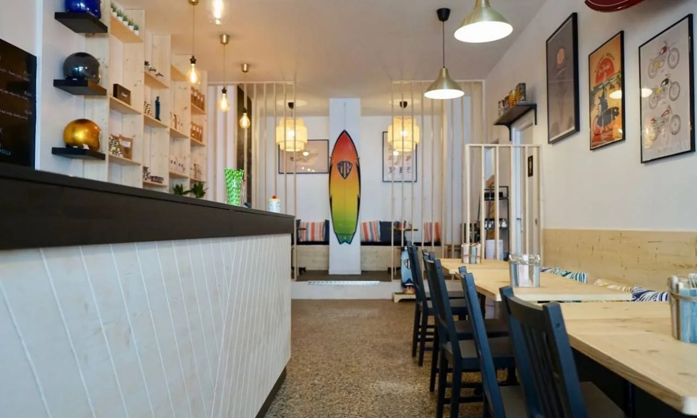

Crêperie · Saint-Jean-de-Monts
Le Beurre Noisette
Galettes de blé noir, crêpes de froment, cidre brut. Une maison de pierre à deux pas de la plage, ouverte sur la saison.
L'essentiel
Horaires
| Lundi | Fermé |
|---|---|
| Mardi | 12h – 14h30 |
| Mercredi | 12h – 14h30 |
| Jeudi | 12h – 14h30 |
| Vendredi | 12h – 14h30 · 19h – 22h |
| Samedi | 12h – 14h30 · 19h – 22h |
| Dimanche | 12h – 14h30 |
Services
- Sur place
- À emporter
- Groupes sur réservation
- [À COMPLÉTER] terrasse, animaux, accès PMR…
La carte
Entrées
- Soupe de poisson maison[•]
- Rillettes de maquereau[•]
- Salade de chèvre chaud[•]
Galettes de blé noir
- La complète[•]
- Andouille, pommes, moutarde[•]
- Saint-Jacques, crème de poireau[•]
- La beurre noisette[•]
Crêpes de froment
- Sucre, beurre noisette[•]
- Caramel au beurre salé[•]
- Pommes caramélisées, glace[•]
- Chocolat maison[•]
À boire
- Cidre brut, bouché[•]
- Cidre doux[•]
- Jus de pomme fermier[•]
Prix en euros, TVA non applicable, article 293 B du CGI. Les prix de cette carte sont ceux de la démonstration — [À COMPLÉTER] une fois la carte réelle fournie.
À emporter
Toute la carte est à emporter. [À COMPLÉTER] créneau de retrait et commande par téléphone.
La maison

On en parle
« On est venus pour la galette, on est revenus pour le beurre noisette. »
[À COMPLÉTER] avis d'exemple
« Une salle simple, un accueil franc, et une carte qu'on a envie de finir. »
[À COMPLÉTER] avis d'exemple
« Les enfants ont eu leur crêpe, moi mon cidre. Tout le monde était content. »
[À COMPLÉTER] avis d'exemple
Nous trouver
Le Beurre Noisette
[À COMPLÉTER] rue à préciser
85160 Saint-Jean-de-Monts
[À COMPLÉTER] repère à ajuster sur l'adresse exacte.